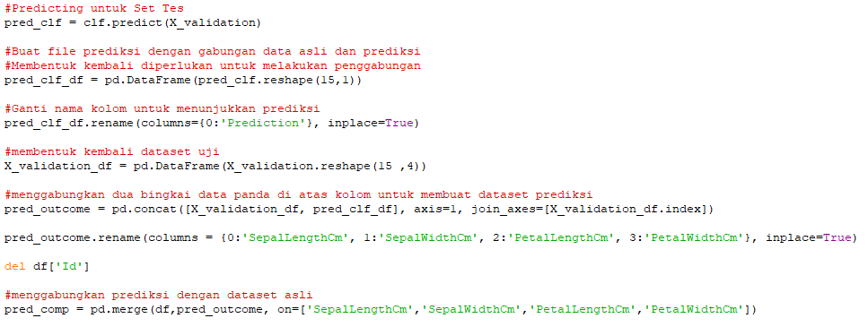
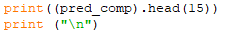

Konsep K-NN (K-Nearest Neighbor)¶
1. Dasar Teori¶
K-nearest neighbor (k-NN atau KNN) adalah sebuah metode atau algoritme untuk melakukan klasifikasi suatu data berdasarkan data pembelajaran (train data sets), yang diambil dari k tetangga terdekatnya (nearest neighbors). Dimana k merupakan banyaknya tetangga terdekat. Ketepatan algoritme k-NN ini sangat dipengaruhi oleh ada atau tidaknya fitur-fitur yang tidak relevan, atau jika bobot fitur tersebut tidak setara dengan relevansinya terhadap klasifikasi. Riset terhadap algoritme ini sebagian besar membahas bagaimana memilih dan memberi bobot terhadap fitur, agar performa klasifikasi menjadi lebih baik. Dekat atau jauhnya tetangga biasanya dihitung berdasarkan Euclidean Distance, atau dapat juga menggunakan rumus jarak yang lain.
Pembahasan pada halaman ini akan melihat bagaimana KNN dapat diimplementasikan dengan library "Scikit-Learn Python". Di samping itu bukan hanya tahu bagaimana teori dari metode KNN ini namun juga bagaimana respon mengenai pro (kelebihan) dan kontra (kelemahan) dari algoritma tersebut.
2. Tahapan Algoritma Perhitungan K-NN¶
-
Bagi data menjadi data training dan data testing
-
Menentukan parameter K sebagai banyaknya jumlah tetangga terdekat dengan objek baru. Banyaknya k, sebaiknya merupakan angka ganjil, misalnya k = 1, 2, 3, dan seterusnya.
-
Menghitung jarak antar data baru terhadap semua data yang telah di training menggunakan jarak Euclidean. Rumus Euclidean Distance sebagai berikut :

-
Urutkan hasil perhitungan tersebut dengan data training secara ascending (berurutan dari nilai tinggi ke rendah) dan menentukan tetangga terdekat berdasarkan jarak minimum K
-
Mengumpulkan Klasifikasi nearest neighbor berdasarkan nilai k
-
Dengan menggunakan kategori nearest neighbor yang paling mayoritas atau frekuensi terbanyak maka dapat diprediksikan sebagai hasil klasifikasi data baru.
3. Kelebihan dan Kekurangan dari Algoritma K-NN¶
Kelebihan :
- Mudah dipahami dan diimplementasikan
Untuk mengklasifikasi instance x menggunakan kNN, kita cukup mendefinisikan fungsi untuk menghitung jarak antar-instance, menghitung jarak x dengan semua instance lainnya berdasarkan fungsi tersebut, dan menentukan kelas x sebagai kelas yang paling banyak muncul dalam k instance terdekat.
-
Lebih efektif di data training yang besar
-
Dapat menghasilkan data yang lebih akurat
-
Hanya ada dua parameter yang diperlukan untuk mengimplementasikan KNN yaitu nilai K dan fungsi jarak (mis. Euclidean atau Manhattan dll.)
Kekurangan :
-
Perlu ditentukan nilai k yang paling optimal yang menyatakan jumlah tetangga terdekat
-
Biaya komputasi cukup tinggi karena perhitungan jarak harus dilakukan pada setiap query instance bersama-sama dengan seluruh instan dari training sample.
Implementasi K-NN dengan Scikit-Learn Python¶
Pada bagian ini, pembahasan selanjutnya mengenai bagaimana implementasi algoritma k-nearest neighbors dengan Scikit-Learn Python. Di sini menggunakan dataset Iris yang terdiri dari empat feature: sepal-width, sepal-length, petal-width dan petal-length. Ini adalah feature dari jenis spesifik tanaman Iris yang berfungsi untuk memprediksi kelas tanaman. Terdapat tiga kelas dalam dataset: Iris-setosa, Iris-versicolor dan Iris-virginica.
Langkah-langkah Implementasi K-NN dengan Scikit-Learn Python¶
- Mengimpor Library python
Pertama, import beberapa library yang nantinya diperlukan dalam program ini antara lain import pandas dan sklearn membuat program prediksi menggunakan metode KNN di python. Library pandas akan kita gunakan untuk mengambil data Iris kita sedangkan sklearn sebagai library yang mempunyai fungsi Kneighbors yang kita butuhkan nantinya. Berikut kode programnya :
- Mengambil Dataset
Selanjutnya mengambil dataset iris dengan menggunakan library pandas yang telah diimport sebelumnya. Berikut kode programnya :
Pada kode diatas tertulis *pd.read_csv* , bukan *pandas.read_csv* karena sebelumnya sudah mengimpor pandas sebagai *pd* sehingga saatmenggunakan *pandas* hanya perlu memanggil *pd* saja.- Menentukan Kneighbors Classifier
Setelah data sudah ada, selanjutnya menentukan fungsi dari Kneighbors sendiri. Disini akan memasukkan fungsi KNN kedalam variabel clf sehingga nantinya saat memerlukannya hanya perlu memanggil variabel clf saja. Adapun maksud dri n_neighbors=3 dibawah adalah untuk mendefinisikan jumlah tetangga. Berikut kode programnya :
- Split Dataset
Perlu diketahui, saat kita menggunakan program prediksi dengan data training dan data testing yang sama, maka hasilnya tidak akan terlihat optimal. Oleh karena itu kita akan membagi dataset menjadi dua bagian, yaitu data training dan data testing. Untuk membagi dataset menjadi data training dan data testing dalam program, Jalankan kode berikut :
- Membuat File Prediksi
Setelah itu, membuat prediksi menggunakan fungsi Kneighbors dalam python. Berikut kode programnya :

Pada syntax program diatas,fungsi Kneighbors dijalankan pada syntax clf.predict. Kemudian membuat sebuah model dataframe dengan 15 baris dan 1 kolom. Dataframe ini akan digunakan untuk menyimpan data hasil prediksi agar nanti bisa dicetak.Setelah itu menggabungkannya dengan data asli agar bisa ditampilkan perbedaan antara data asli dengan hasil prediksi.
- Menampilkan Data Hasil Prediksi
Setelah dataframe selesai dibuat selanjutnya adalah menampilkannya. Jalankan kode program ini :

- Membuat Prediksi Untuk Inputan nilai baru diluar dataset
Dalam hal ini prediksi yang dilakukan masih sebatas data pada dataset iris saja. Agar bisa menguji data selain yang ada pada data testing. Jalankan kode program ini:
Outputnya adalah sebuah prediksi dari data yang telah diinputkan. Itu adalah berbagai Syntak untuk melakukan prediksi dengan menggunakan metode Kneighbors.
Source Code Metode Kneighbors :¶
import numpy as np # linear algebra
import pandas as pd # data processing, CSV file I/O (e.g. pd.read_csv)
from sklearn.neighbors import KNeighborsClassifier
from sklearn import model_selection
from sklearn.model_selection import train_test_split
from sklearn.metrics import accuracy_score
#memuat file csv
df=pd.read_csv('Iris.csv')
#Inisialisasi K-Neighbors
clf=KNeighborsClassifier(n_neighbors=7)
# Dataset validasi dataset
array = df.values
X = array[:,1:5]
Y = array[:,5]
# Sepertiga data sebagai bagian dari set tes
validation_size = 15
seed = 7
X_train, X_validation, Y_train, Y_validation = model_selection.train_test_split(X, Y, test_size=validation_size, random_state=seed)
# Opsi tes dan metrik evaluasi
scoring = 'accuracy'
#Menyesuaikan set training
clf.fit(X_train, Y_train)
#Predicting untuk Set Tes
pred_clf = clf.predict(X_validation)
#Buat file prediksi dengan gabungan data asli dan prediksi
#Membentuk kembali diperlukan untuk melakukan penggabungan
pred_clf_df = pd.DataFrame(pred_clf.reshape(15,1))
#Ganti nama kolom untuk menunjukkan prediksi
pred_clf_df.rename(columns={0:'Prediction'}, inplace=True)
#membentuk kembali dataset uji
X_validation_df = pd.DataFrame(X_validation.reshape(15 ,4))
#menggabungkan dua bingkai data panda di atas kolom untuk membuat dataset prediksi
pred_outcome = pd.concat([X_validation_df, pred_clf_df], axis=1, join_axes=[X_validation_df.index])
pred_outcome.rename(columns = {0:'SepalLengthCm', 1:'SepalWidthCm', 2:'PetalLengthCm', 3:'PetalWidthCm'}, inplace=True)
del df['Id']
#menggabungkan prediksi dengan dataset asli
pred_comp = pd.merge(df,pred_outcome, on=['SepalLengthCm','SepalWidthCm','PetalLengthCm','PetalWidthCm'])
#cetak 10 baris prediksi akhir
print((pred_comp).head(15))
print ("\n")
# make prediction
sl = input('Enter sepal length (cm): ')
sw = input('Enter sepal width (cm): ')
tl = input('Enter tepal length (cm): ')
tw = input('Enter tepal width (cm): ')
dataClass = clf.predict([[sl,sw,tl,tw]])
print ("\n")
print('Prediction: '), dataClass
print ("\n")